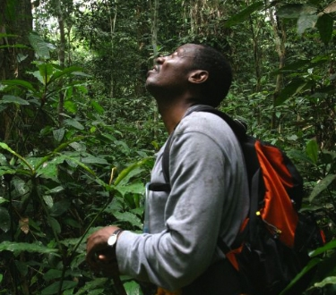

Range Of Species
Threat
Overview
Mankind is the biggest threat to land and wildlife.
India is a huge continent that is rapidly changing and growing. Unfortunately, people are threatening Africa’s natural habitats and biodiversity—many without fully realizing the consequences. Through smart planning and active community involvement, Indian Wildlife Foundation can help Indians develop a modern India that also protects its natural treasures.
Project

Descriptions & Plan
Bonobos in danger.
One of the greatest threats to wildlife in the Democratic Republic of Congo (DRC) is loss of habitat due to land conversion, human encroachment, and logging. Establishing protected areas like national parks and reserves is one important step in helping to reverse this trend. Protecting habitat is especially important for the endangered bonobos, which only live in DRC and whose population is rapidly decreasing.
A new bonobo reserve—by the community, for the community.
At the request of local communities—who saw the success and economic benefits to the community that arose from the establishment of the nearby Lomako-Yokokala Faunal Reserve—AWF worked with local stakeholders and the Iyondji community to establish another protected area in which bonobos can live free of external threat. Iyondji is a priority conservation target, as it has a high concentration of bonobos and an intact forest. It is also situated on the periphery of the already-safeguarded Luo Scientific Reserve, allowing for an immediate expansion of core protected habitat. On April 12, 2012, the Congolese government officially recognized the Iyondji Bonobo Community Reserve, an 1,100-square-kilometer protected area that will also help protect the forest elephant, Congo peacock, and other wildlife.